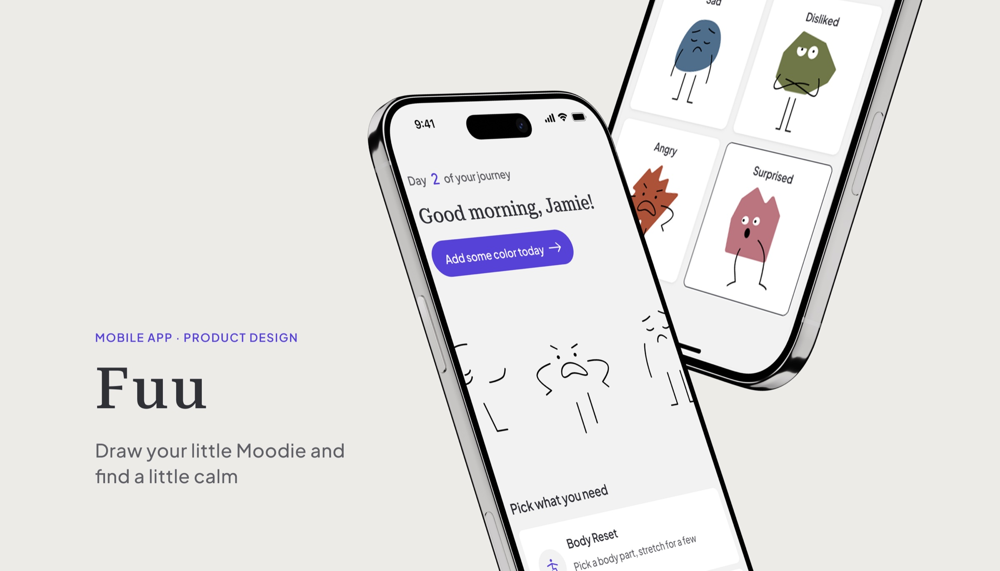
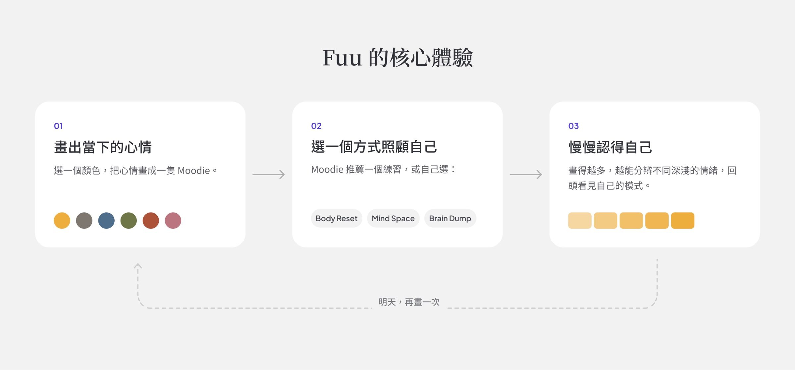
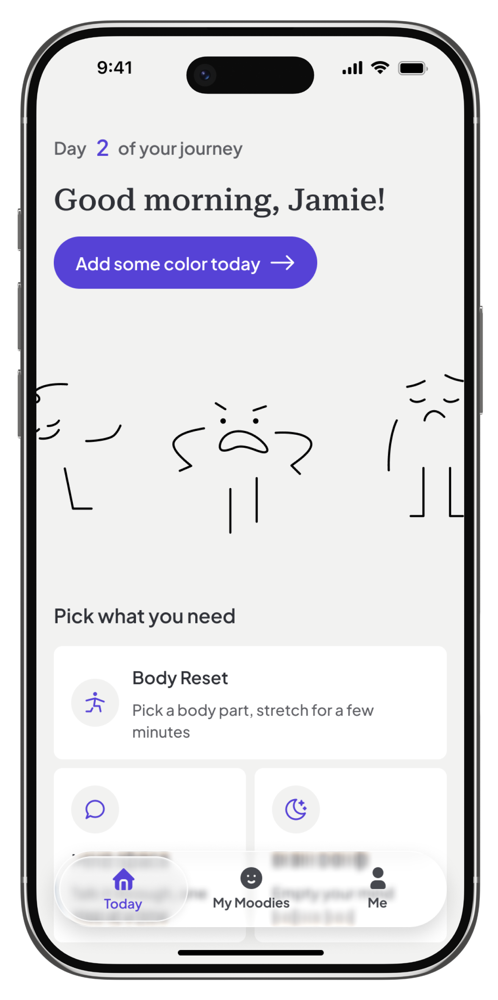

2026年10月
Fuu｜把說不出口的情緒，畫出來
試玩互動原型專案概覽 Project Overview
成果展出
Fuu 是一款以繪畫為媒介的情緒陪伴 App，希望讓使用者在疲憊、煩躁或難以言說的時候，也能輕鬆地表達當下的心情。
有別於市面上多數以文字紀錄或引導式練習為主的情緒 App，Fuu 以「繪畫」作為情緒探索的起點。使用者只需選擇一個代表當下心情的顏色，便能為專屬角色 Moodie 手繪造型，或選擇預設樣式完成創作。即使當下沒有太多力氣，也能輕鬆送出；若想進一步抒發情緒，則可以透過自由塗鴉，將難以言說的感受轉化為畫面。
完成創作後，Fuu 會根據使用者當下的狀態，推薦一項簡單、能立即開始的情緒照顧練習，讓情緒表達不只是停留在紀錄，而是進一步轉化為實際的自我照顧。
角色與產出
個人 Side Project，從產品定位、競品研究、商業模式分析，到使用者流程、UI 設計、Design System 與互動原型，皆由我負責規劃與執行。
設計過程中運用 AI 輔助發想與實作，透過身邊朋友的實際操作與回饋進行驗證與迭代的完整經驗。
專案挑戰
這個專案最大的挑戰，是如何守住 Fuu 「輕量、低負擔」的核心定位。
許多看似合理的功能，例如文字紀錄、每日打卡，都可能增加產品的複雜度，也提高使用者的參與成本。
專案目標
不需要花時間整理思緒，只要幾秒鐘就能透過畫畫表達心情，找到當下可以做的一件小事。隨著一次次的使用，慢慢認識自己的情緒，也更了解自己。
專案背景 Background
對許多生活在高壓環境中的上班族來說，察覺自己狀態不好並不難。
結束一天的工作後，身體已經很疲憊，腦袋卻依然停不下來。面對複雜的情緒，可能分不清自己究竟是生氣、委屈，還是單純感到疲憊。
其實，他們並非沒有嘗試過其他方式。寫日記需要花費心力整理思緒，也可能顧慮隱私；冥想需要一定程度的專注，對已經疲憊的大腦而言並不容易；情緒紀錄 App 雖然提供情緒選項，卻不一定能找到貼近當下感受的詞彙，即使完成紀錄，也未必知道接下來可以做些什麼。
“ 當人們最需要照顧自己的時候，往往也是最沒有力氣的時候 ”
Fuu 希望從這個日常困境出發，降低情緒表達與自我探索的門檻。不必急著找到正確的詞彙，只要透過簡單的繪畫，紀錄當下的感受，並獲得適合此刻的自我照顧練習，慢慢建立對自己的理解。
設計流程 Design Process
- 研究與定位
分析六款情緒類 App，找出現有產品的共同缺口，探索以「繪畫」取代文字作為情緒表達方式的可能性，讓使用者透過視覺創作，更自然地認識與探索自己的情緒。
- 定義問題
建立 Persona 與反 Persona，釐清 Fuu 的目標使用者、核心需求與產品定位，確立產品的設計方向與服務範圍。
- 決定不做什麼
捨棄傳統情緒紀錄產品以文字筆記為核心的設計，將「畫」作為主要的情緒表達媒介，避免產品走向單純的日記或紀錄工具。
- 流程與框架
以「畫出情緒 → 理解情緒 → 推薦練習」為核心使用流程，規劃首頁、三大情緒探索工具及回顧頁，建立完整且直覺的使用體驗。
- UI & Design System
建立情緒色彩系統、介面元件與設計規範，例如「全圓角代表可互動」，確保不同頁面與功能在持續擴充時，仍維持一致的視覺語言。
- 測試與迭代
邀請身邊朋友實際操作原型，觀察使用過程中的行為與反應，整理回饋背後的真正原因，找出體驗上的問題，並據此持續優化設計。
專案現況釐清 Current State & Define
我分析了六款情緒 App（Calm、Headspace、Daylio、Moodfit、Wysa、How We Feel），發現體驗大致可分為兩類：一類以文字為主，透過日記或情緒詞彙記錄感受；另一類則以引導式練習為主，例如冥想、呼吸練習與課程。這些方式各有價值，但對於下班後已經身心疲憊、沒有太多心力的使用者而言，仍需要一定的投入才能開始。

競品研究
1. 降低情緒表達的門檻
很多人在疲憊的時候，其實很難清楚描述自己的感受，所以 Fuu 改用繪畫作為情緒探索的起點，不需要先找到正確的詞彙，也能表達當下的心情。
2. 縮短從情緒覺察到實際行動的距離
一般情緒紀錄工具可能在記錄完就結束，但 Fuu 會根據使用者選擇的情緒推薦一個當下就能執行的小練習，讓使用者不需要再花時間思考接下來該做什麼。
3. 降低自我照顧帶來的壓力
Fuu 不強調連續打卡或完成紀錄，也不要求使用者每次都完整表達。即使只有選擇一個顏色、送出心情，也算完成一次情緒探索。所以我希望 Fuu 解決的不是如何讓使用者記錄更多情緒，而是讓他們在已經很累的時候，仍然有一個容易開始、也能獲得即時支持的方式。
設計目標 Design Approach
Fuu 以繪畫作為情緒表達的起點，降低使用者探索情緒的門檻，並在完成表達後提供即時、可執行的自我照顧練習。同時透過低負擔、不強迫打卡與比較的設計，讓使用者能依照自己的步調照顧情緒，逐漸建立對自己的理解。

挑戰與限制 ｜ Challenges & Constraints
1. 守住「輕量」，取捨功能
設計過程中，有許多看似合理的功能，但不一定符合 Fuu 的核心定位。最後，我選擇捨棄三項功能：
- 文字描述框：避免讓情緒表達回到文字日記的模式，增加書寫負擔與隱私顧慮。
- 畫作編輯功能：避免使用者過度追求畫面的完整與美觀，保留當下直覺表達的意義。
- 連續打卡：不使用連續天數衡量自我照顧，避免中斷紀錄帶來挫折感。
2. 心理健康產品的責任與界線
Fuu 參考藝術創作與情緒探索的概念，定位為日常情緒陪伴工具，而非心理治療或專業診斷服務。
因此，考量使用者可能表達的高風險內容，系統偵測到危機相關字眼時，會適時中止互動，並引導使用者尋求真實的支持與專業協助。
設計產出 Deliverables
- Moodies
選擇一個代表當下心情的顏色，就會生成對應的手繪角色。使用者也能隨著熟悉程度，進一步探索更細緻的子情緒，例如難過中的「想念」或「孤單」。探索、辨認情緒是一種能力，所以子情緒設定為免費開放功能。
- 三個工具
Body Reset、Mind Space、Brain Dump 各自解決不同時刻的需求。Brain Dump 和日記的差別是：日記是「留下來」，Brain Dump 是「放下來」。

想自己畫一隻 Moodie？ 開啟互動原型 →
使用者測試 User Testing
使用者測試不只是收集意見，更重要的是理解回饋背後的需求，並在產品定位與使用者體驗之間做出取捨。
Now
兩則回饋其實是同一個問題：點選心情感受本身就是決定，所以拿掉 Next，直接進下一頁，選錯可以返回。
一開始的 Greetings「How are you feeling today?」沒有傳達情緒跟顏色是關聯，文案調整。
Next
複雜的一天確實可能有不只一種情緒。MVP 先驗證「一天一隻」的核心流程，V2 再開放一天 2–3 隻。
規劃在 V2，但只在事後回看時才能分享，避免使用者在畫的當下就想著要畫好看。
Never
Fuu 記錄的是當下的心情，畫完還能修改，就會開始追求畫得好看，紀錄也失去意義。
「畫的當下」已經有復原鍵。
商業模式 Business Model
Fuu 將付費價值放在「長期的自我理解」，而不是限制當下的情緒支持。使用者可以免費使用 Moodies、探索子情緒與進行基本練習，隨時表達和整理自己的感受；當累積一定的使用紀錄後，則可以透過付費解鎖週報、月報與練習效果分析，進一步看見情緒變化、生活習慣與練習之間的關聯。
子情緒也特別維持免費，因為辨認情緒是自我理解的基礎，不應成為付費門檻。免費體驗讓使用者能持續探索情緒，也讓 Fuu 有機會累積長期資料，作為未來個人化洞察的基礎。
反思與學習 Reflection
1設計不只是增加，更是取捨
這個專案讓我體會到，功能越多不代表體驗越好。每增加一個功能，都可能帶來新的操作負擔，甚至偏離產品原本想解決的問題。因此，比起不斷增加功能，更重要的是回到產品核心，判斷哪些需求真正值得被解決，以及是否有更簡單的方式達成。
2設計界線
情緒類產品不只是提供情緒出口，也需要理解自身能力的界線。Fuu 能協助使用者認識與整理日常情緒，但不能取代專業協助。當使用者出現危機訊號時，如何在維持產品溫柔體驗的同時，適時引導他們尋求真實資源，也是設計者必須考量的責任。